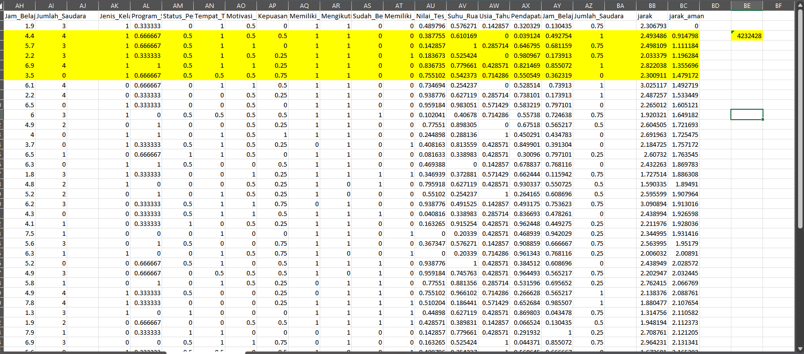
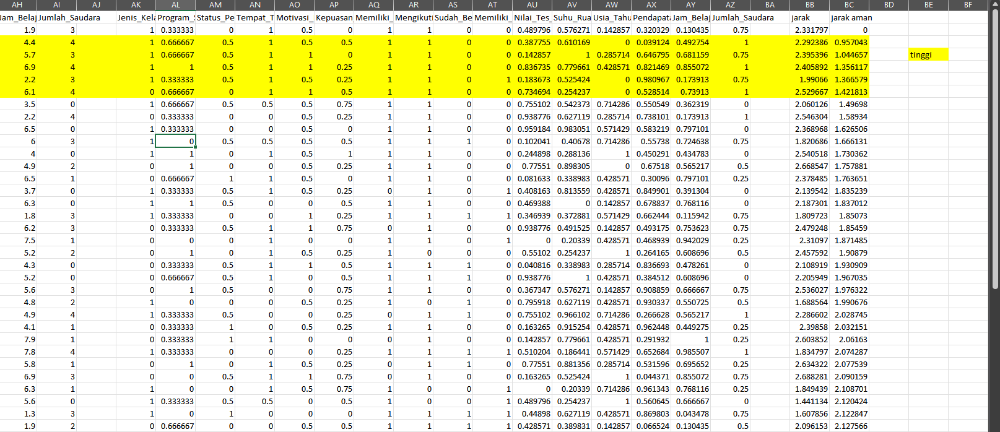
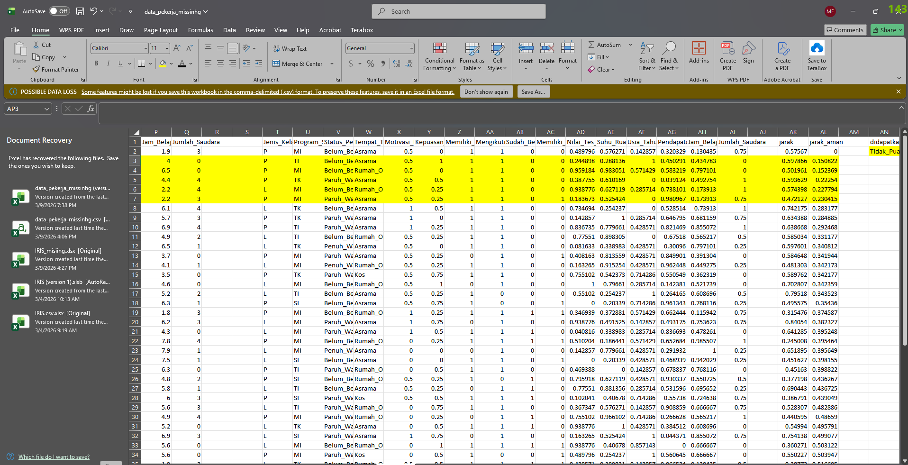

Pertemuan 4#
1. Pengertian K-Nearest Neighbor#
k-Nearest Neighbor (KNN) adalah salah satu metode dalam data mining dan machine learning yang digunakan untuk klasifikasi maupun prediksi nilai berdasarkan kedekatan jarak antar data.
Prinsip dasar dari KNN adalah bahwa data yang memiliki karakteristik mirip akan berada pada jarak yang dekat dalam ruang fitur. Oleh karena itu, suatu data baru akan ditentukan kelas atau nilainya berdasarkan k data tetangga terdekat (nearest neighbors) yang sudah diketahui sebelumnya.
Parameter k menunjukkan jumlah tetangga terdekat yang digunakan dalam proses penentuan keputusan.
Konsep Dasar KNN#
Menentukan nilai k (jumlah tetangga terdekat).
Menghitung jarak antara data baru dengan seluruh data pada dataset.
Mengurutkan jarak dari yang paling kecil.
Mengambil k data dengan jarak terdekat.
Menentukan kelas atau nilai berdasarkan mayoritas atau rata-rata dari tetangga tersebut.
Terdapat dua jenis tipe data yang diprediksi dalam eksperimen ini:
Data Numerik (Contoh:
Pendapatan_Bulanan) diselesaikan dengan pendekatan Regresi (Rata-rata/Mean).Data Kategorik (Contoh:
Kepuasan_Kuliah) diselesaikan dengan pendekatan Klasifikasi (Suara Terbanyak/Modus).
2. Tahap Pra-Pemrosesan (Pre-processing)#
Sebelum menghitung kemiripan antar baris data, seluruh fitur harus disamakan skalanya agar tidak ada satu fitur pun yang mendominasi perhitungan jarak (misalnya gaji jutaan rupiah dibandingkan rentang indeks skala 4).
Metode yang digunakan untuk pra-pemrosesan adalah:
Perankingan Kategori (Label Encoding): Seluruh data yang berupa teks/kategori (seperti
Program_Studi,Status_Pekerjaan,Motivasi_Belajar) diubah terlebih dahulu menjadi representasi angka berurutan (ranking).Tips Excel: Anda bisa menggunakan fungsi
=IF(),=IFS(), atauVLOOKUPke tabel referensi untuk mengubah teks menjadi angka. Contoh:=IFS(A2="Rendah", 1, A2="Sedang", 2, A2="Tinggi", 3)Normalisasi Min-Max: Setelah seluruh dataset murni berisi angka, seluruh fitur dinormalisasi ke dalam rentang skala 0 hingga 1.
Rumus Normalisasi Min-Max: $\(z = \frac{x - \text{min}}{\text{max} - \text{min}}\)$
Implementasi Rumus Excel (Min-Max): Asumsikan data asli berada di sel
D2dan keseluruhan data kolom tersebut berada di rentangD$2:D$41.= (D2 - MIN(D$2:D$41)) / (MAX(D$2:D$41) - MIN(D$2:D$41))(Kunci rentang baris menggunakan simbol$agar tidak bergeser saat ditarik ke bawah)
3. Prosedur Perhitungan Jarak (Euclidean)#
Untuk mengukur tingkat kemiripan antara pekerja target (misal ID 40) dengan pekerja lainnya, digunakan metrik Euclidean Distance. Karena semua data sudah dalam format numerik ternormalisasi (0-1), rumus jarak dapat diterapkan secara seragam pada seluruh fitur.
Rumus jarak Euclidean untuk seluruh fitur (\(n\)): $\(d(i,j) = \sqrt{ \sum_{f=1}^{n} (z_{if} - z_{jf})^2 }\)$
Implementasi Rumus Excel (Euclidean Distance): Asumsikan baris referensi/target (ID 40) berada di baris 41 (
E$41sampaiT$41) dan baris data pembanding saat ini berada di baris 2 (E2sampaiT2).Cara Manual:
=SQRT((E2-E$41)^2 + (F2-F$41)^2 + (G2-G$41)^2 + ...)Cara Cepat (Array / Sum of Squares):
=SQRT(SUMXMY2(E$41:T$41, E2:T2))
Aturan Penting (Variabel Target): Kolom target yang sedang dicari/ditebak (misalnya kolom normalisasi Kepuasan_Kuliah atau Pendapatan_Bulanan) wajib dikeluarkan dari rumus perhitungan jarak di atas agar tidak menghasilkan error matematis atau circular reference.
Langkah Lanjutan di Spreadsheet/Excel:
Masukkan rumus Square Root (
SQRT) di atas pada kolom baru bernama “Jarak”.Lakukan Copy pada kolom Jarak, lalu Paste Special > Values untuk membekukan hasil rumus jarak agar menjadi angka statis.
Lakukan pengurutan data (Data > Sort) berdasarkan kolom Jarak dari nilai Terkecil ke Terbesar (Smallest to Largest).
4. Proses Imputasi (Penebakan Nilai)#
Setelah data terurut, tetangga terdekat akan berada tepat di bawah baris target (karena baris target memiliki jarak 0 dengan dirinya sendiri). Kita menggunakan K=5 (5 tetangga terdekat) untuk mengambil keputusan.
Skenario A: Memprediksi Nilai Numerik (Pendapatan_Bulanan)#
Karena target berupa angka kontinu, prediksi didapatkan dengan menghitung Nilai Rata-rata (Mean) dari 5 tetangga terdekat.
Langkah & Rumus Excel:
Cek nilai asli (bukan yang dinormalisasi) dari
Pendapatan_Bulanan5 baris pertama teratas.Hitung rata-ratanya menggunakan rumus Average. Misal data tersebut ada di sel
U2sampaiU6:=AVERAGE(U2:U6)Hasil rata-rata tersebut adalah tebakan akhir untuk mengisi kekosongan pendapatan ID 40.

Skenario B: Memprediksi Nilai Kategorik/Teks (Kepuasan_Kuliah / Motivasi_Belajar)#
Karena target berupa teks/kategori, prediksi didapatkan dengan mengambil Suara Terbanyak (Mayoritas/Modus) dari 5 tetangga terdekat.
Langkah & Rumus Excel:
Cek kolom teks asli (misal:
Kepuasan_Kuliah) dari 5 baris teratas (Misalnya berada di selV2:V6).Hitung frekuensi kemunculan setiap kategori. Anda bisa menghitung manual dengan
=COUNTIF(V$2:V$6, "Puas"), atau langsung mencari teks dengan kemunculan terbanyak menggunakan rumus kombinasi Index-Match-Mode:=INDEX(V2:V6, MATCH(MAX(COUNTIF(V2:V6, V2:V6)), COUNTIF(V2:V6, V2:V6), 0))Kategori dengan frekuensi terbanyak dipilih sebagai tebakan akhir.
Penanganan Kasus Seri (Tie-Breaker): Jika dalam 5 tetangga tersebut tidak ditemukan mayoritas mutlak (misal dua kelas sama-sama muncul 2 kali), maka keputusan diambil murni berdasarkan data milik Tetangga Terdekat Pertama (K=1).

#5. Kesimpulan#
Algoritma KNN dapat diterapkan secara efektif untuk menangani Missing Value Imputation. Dengan mengonversi seluruh data kategorik menjadi angka (perankingan) dan menormalisasinya bersama data numerik menggunakan Min-Max, metrik jarak Euclidean dapat menghitung tingkat kemiripan antar baris data secara adil dan konsisten. Pemanfaatan Spreadsheet mempermudah transparansi perhitungan tahapan ini secara manual.
Pakai campuran#
Data Kategorik (Contoh: Kepuasan_Kuliah) diselesaikan dengan pendekatan Klasifikasi (Suara Terbanyak/Modus).
2. Tahap Pra-Pemrosesan (Pre-processing) Khusus Mixed Data#
Karena dataset memiliki tipe data campuran, kita tidak bisa langsung menormalisasi semuanya secara serampangan. Data harus dipisah perlakuannya berdasarkan 3 tipe:
Kolom Bantuan (Mulai baris 2 s/d 51):
Ordinal (Motivasi) [X2]: =(MATCH(F2, {“Rendah”,”Sedang”,”Tinggi”}, 0) - 1) / (3 - 1)
Numerik (Min-Max) [T2 s/d Y2]:
AD2 (Nilai_Tes_Potensi): =(L2 - MIN(L\(2:L\)51)) / (MAX(L\(2:L\)51) - MIN(L\(2:L\)51))
AE2 (Suhu_Ruangan_C): =(M2 - MIN(M\(2:M\)51)) / (MAX(M\(2:M\)51) - MIN(M\(2:M\)51))
AF2 (Usia_Tahun): =(N2 - MIN(N\(2:N\)51)) / (MAX(N\(2:N\)51) - MIN(N\(2:N\)51))
AG2 (Pendapatan_Bulanan): =(O2 - MIN(O\(2:O\)51)) / (MAX(O\(2:O\)51) - MIN(O\(2:O\)51))
AH2 (Jam_Belajar_per_Hari): =(P2 - MIN(\(P\)2:\(P\)51)) / (MAX(\(P\)2:\(P\)51) - MIN(\(P\)2:\(P\)51))
AI2 (Jumlah_Saudara): =(P2 - MIN(P\(2:P\)51)) / (MAX(P\(2:P\)51) - MIN(P\(2:P\)51))
3. Prosedur Perhitungan Jarak Campuran (Mixed Distance)#
Untuk mengukur tingkat kemiripan antar pekerja, kita menggunakan pendekatan Mixed Distance. Algoritma ini memecah perhitungan menjadi 3 blok yang pada akhirnya akan menghasilkan 11 elemen jarak pembentuk.
A. Blok Nominal & Biner (8 Elemen) Menggunakan Simple Matching (0 jika nilainya sama, 1 jika berbeda).
💻 Rumus Excel: data target (ID 40) di
E$41:L$41. Gunakan rumus cepat ini untuk langsung menghitung total selisihnya:=(T2<>$T$41)+(U2<>$U$41)+(V2<>$V$41)+(W2<>$W$41)+(Z2<>$Z$41)+(AA2<>$AA$41)+(AB2<>$AB$41)+(AC2<>$AC$41)+
B. Blok Ordinal (2 Elemen) Menggunakan selisih absolut dari rasio peringkatnya (Min-Max dari batas ranking). $\(d = |z_1 - z_2| \quad \text{dengan} \quad z = \frac{x - 1}{M_f - 1}\)$
💻 Rumus Excel: menggunakan ini.
ABS(X2-$X$41)ABS(Y2-$Y$41)kolom yang ini tidak dipakai karena kita akana mencari data di kolom ini. C. Blok Numerik (1 Elemen Gabungan) Seluruh variabel numerik (yang sudah di-Min-Max di tahapan sebelumnya) dicari selisih kuadratnya, dirata-rata sesuai jumlah kolom numerik, lalu diakar-kuadratkan (Root Mean Square). $\(d_{\text{num}} = \sqrt{ \frac{\sum (z_1 - z_2)^2}{n_{\text{numeric}}} }\)$💻 Rumus Excel: dengan cara ini.
SQRT(SUMXMY2(AD2:AI2, $AD$41:$AI$41) / 6)
PENGGABUNGAN AKHIR (TOTAL JARAK): Ketiga hasil di atas dijumlahkan, kemudian dibagi dengan total elemen pembentuk (11 elemen). $\(d(i,j) = \frac{ \sum \text{Nominal} + \sum \text{Ordinal} + d_{\text{num}} }{11}\)$ atau rumus lengkapnya
=(
(T2<>$T$41) + (U2<>$U$41) + (V2<>$V$41) + (W2<>$W$41) +
(Z2<>$Z$41) + (AA2<>$AA$41) + (AB2<>$AB$41) + (AC2<>$AC$41) +
ABS(X2-$X$41) +
SQRT(SUMXMY2(AD2:AI2, $AD$41:$AI$41) / 6)
) / 10
⚠️ Aturan Penting Excel: Gabungkan ketiga rumus A, B, dan C di atas ke dalam satu sel panjang di kolom “Jarak”, lalu bagi dengan 11. Jangan lupa untuk mengeluarkan/menghapus sel kolom target yang sedang diprediksi agar tidak terjadi error. Setelah rumus jarak ditarik ke bawah, Copy > Paste Special as Values, lalu Sort dari Smallest to Largest.
4. Proses Imputasi (Penebakan Nilai)#
Setelah data terurut dari jarak terkecil (0), tetangga terdekat akan berada tepat di bawah baris target. Kita menggunakan K=5 (5 tetangga terdekat) untuk mengambil keputusan.
Skenario B: Memprediksi Nilai Kategorik/Teks (Kepuasan_Kuliah)#
Karena target berupa teks/kategori, prediksi didapatkan dengan mengambil Suara Terbanyak (Mayoritas/Modus) dari 5 tetangga terdekat.
Langkah & Rumus Excel:
Cek kolom teks asli (misal:
Kepuasan_Kuliah) dari 5 baris teratas (Misal di selV3:V7).Cari teks dengan kemunculan terbanyak menggunakan kombinasi Index-Match-Mode:
=INDEX(G3:G7, MATCH(MAX(COUNTIF(G3:G7, G3:G7)), COUNTIF(G3:G7, G3:G7), 0))Kategori dengan frekuensi terbanyak dipilih sebagai tebakan akhir.
⚖️ Penanganan Kasus Seri (Tie-Breaker): Jika dalam 5 tetangga tersebut tidak ditemukan mayoritas mutlak (misal dua kelas sama-sama muncul 2 kali), maka keputusan diambil murni berdasarkan data milik Tetangga Terdekat Pertama (K=1).
5. Kesimpulan#
Algoritma KNN sangat adaptif dalam menangani kasus Missing Value Imputation. Penggunaan Jarak Campuran (Mixed Distance) terbukti lebih unggul dibanding Euclidean murni untuk dataset yang memiliki variasi tipe atribut (nominal, ordinal, biner, dan numerik). Dengan memisahkan perlakuan antar tipe data, kita mencegah terjadinya bias skala, sehingga tetangga terdekat (K) yang terpilih benar-benar merepresentasikan profil objek yang paling relevan.
